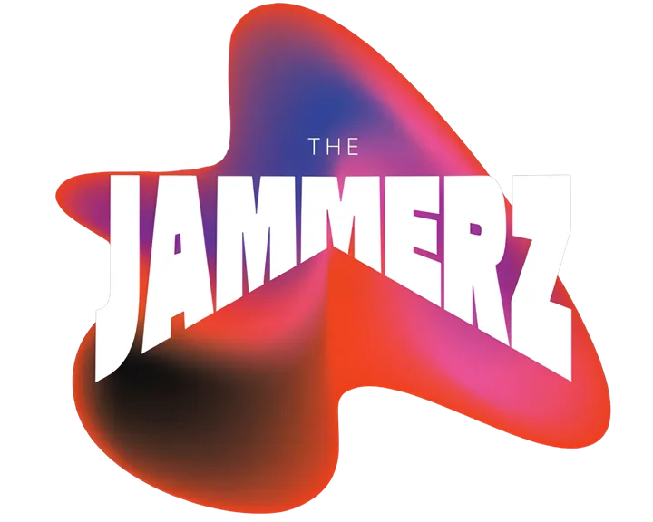

QUENTIN
Basse / Chant
Bassiste instinctif et pilier rythmique. Issu d'un univers groove/funk/rock, il construit son jeu autour du placement et de la cohésion collective. Albums solo sur iTunes.

FUNK · SOUL · BLUES · ROCK · GROOVE
Basés à Bayonne — on se déplace à 1 h 30 de route : Anglet, Biarritz, Saint-Jean-de-Luz, Hendaye, Capbreton, Hossegor, Dax… · 06 71 85 75 24
The Jammerz, c'est avant tout une rencontre entre musiciens du Pays Basque passionnés qui partagent la même obsession : le groove et l'énergie live.
Un premier groupe « Waveshifters » en 2024 puis une restructuration en 2026 avec « The Jammerz ».
Issus d'horizons différents — jazz, funk, musiques latines, rock, électro — les membres du groupe ont accumulé des années d'expérience sur scène, en studio et aux côtés d'artistes reconnus.
Rencontrés en jam sessions (scènes ouvertes), l'envie de réunir toutes ces influences dans un projet commun s'est imposée comme une évidence.
« L'équilibre entre atmosphère et puissance, technique et feeling, finesse et impact. »
Un groupe calibré pour faire vibrer les scènes comme animer doucement une réunion. Les membres du groupe sont des experts de l'improvisation.
5 personnalités, 1 énergie collective
Basse / Chant
Bassiste instinctif et pilier rythmique. Issu d'un univers groove/funk/rock, il construit son jeu autour du placement et de la cohésion collective. Albums solo sur iTunes.
Guitare soliste
Autodidacte passionné, 28 ans de guitare. A partagé la scène avec Robben Ford, Larry Carlton, Eric Clapton, Ben Harper, Gojira, Lara Fabian. Démos pour Ibanez et Fender.
Batterie
Issu d'une famille de musiciens professionnels. Formé au conservatoire en piano, membre de la Zarpai Banda en percussions. ADN musical jazz, funk et latino.
Chant
Voix soul singulière et expressive. Autodidacte guitare 10+ ans, batterie 4 ans, 8 ans de piano-solfège au conservatoire. Authenticité et sensibilité artistique.
Saxophone
Clarinettiste de formation, débute en Colombie. Collabore avec Nassaï, I Sens, Hermafrodisiac. En 2024, single « SAX'TENTATION ». Fusion électro / live.
Vidéos officielles — voir et entendre le groove en action
📽️ Press Kit — Découvrez le groupe
🎵 Démo Live — 1 min
Où nous voir sur scène — venez groover avec nous
Une date à proposer pour votre événement ? Réservez le groupe →
30+ morceaux travaillés — des classiques au funk moderne
À la carte — adaptables à votre événement (1h à 4h de live)
Concert live dans un bar, un restaurant ou une soirée ouverte au public, partout au Pays Basque et dans le Sud des Landes. Groupe de reprises funk, soul, blues et rock.
Animation musicale de votre mariage ou de votre soirée d'entreprise : vin d'honneur, repas ou soirée dansante, selon le moment que vous choisissez. Un orchestre live de 5 musiciens.
Format intimiste en solo ou en duo, parfait pour un cocktail, un vin d'honneur ou un moment calme.
Format scène publique, sonorisation pro, full band.
Set complet pour votre soirée du début à la fin.
Nous partons de Bayonne et jouons dans un rayon d’environ 1 h 30 de route : tout le Pays Basque (Anglet, Biarritz, Bidart, Guéthary, Saint-Jean-de-Luz, Ciboure, Hendaye, Ustaritz, Cambo-les-Bains, Espelette, Saint-Jean-Pied-de-Port) et le Sud des Landes (Tarnos, Ondres, Labenne, Capbreton, Hossegor, Seignosse, Soustons, Saint-Vincent-de-Tyrosse, Dax, Peyrehorade). Et aussi, environ, Orthez (55 min), Pau (1 h 10) et Mont-de-Marsan (1 h 15). Au-delà, comme Oloron, sur demande. Au-delà de 20 km de Bayonne : 8 € / km. Variations liées à la durée, à la logistique et à la présence du saxophoniste.
Demander un devis →Ce qu'on nous demande avant de réserver
Pour un mariage ou un événement privé, comptez entre 500 € et 1 900 € pour 1 h à 4 h de live à cinq musiciens. En format acoustique solo ou duo, c'est 400 €. Une soirée complète de 5 h à 6 h se chiffre sur devis. À cela s'ajoutent les frais de déplacement au-delà de 20 km de Bayonne (8 € / km).
Nous partons de Bayonne et nous jouons dans un rayon d’environ 1 h 30 de route. C’est-à-dire tout le Pays Basque — Anglet, Biarritz, Bidart, Guéthary, Saint-Jean-de-Luz, Ciboure, Urrugne, Hendaye, Ascain, Saint-Pée-sur-Nivelle, Ustaritz, Cambo-les-Bains, Espelette, Hasparren, Saint-Palais, Saint-Jean-Pied-de-Port — et tout le Sud des Landes — Tarnos, Ondres, Labenne, Capbreton, Hossegor, Seignosse, Soustons, Vieux-Boucau, Saint-Vincent-de-Tyrosse, Dax, Saint-Paul-lès-Dax, Peyrehorade. Le Béarn et le cœur des Landes aussi — environ 45 min pour Salies-de-Béarn, 55 min pour Orthez, 1 h 10 pour Pau, 1 h 15 pour Mont-de-Marsan. Plus loin, comme Oloron, sur demande. Au-delà de 20 km de Bayonne, les frais de route sont de 8 € par kilomètre. Voir la page Sud des Landes →
Funk, soul, blues et rock, avec un gros travail sur le groove. Les cinq musiciens viennent d’horizons différents — jazz, funk, musiques latines, rock, électro — ce qui élargit le répertoire au-delà des reprises classiques.
Oui, c’est notre formule principale : concert en bar, en restaurant ou en soirée ouverte au public, entre 500 € et 1 500 € selon la durée et le format. Nous nous déplaçons dans tout le Pays Basque et le Sud des Landes. Voir la page concerts →
Nos prestations vont de 1 h à 4 h de live, découpées en sets selon le déroulé de votre soirée. Pour tenir une soirée complète de 5 h à 6 h, c'est possible : la prestation est alors chiffrée sur devis.
The Jammerz, c'est cinq musiciens : Quentin à la basse et au chant, Thomas à la guitare soliste, Tristan à la batterie, Andrea au chant et Camilo au saxophone (en invité). Un format acoustique réduit en solo ou en duo est également possible.
Nous sommes un groupe de reprises funk, soul, blues et rock. Au programme : Stevie Wonder, James Brown, Aretha Franklin, Chic, Sharon Jones, Lenny Kravitz, Jamiroquai, Queen, Bruno Mars, Jimi Hendrix, Chuck Berry, les Blues Brothers… Le répertoire complet, en deux sets, est publié un peu plus haut sur cette page et tenu à jour.
Oui. Les soirées d'entreprise entrent dans la formule « Mariage / Événement privé », entre 500 € et 1 900 € selon la durée et le format. Nous jouons aussi en bar, en restaurant, en festival et en salle de concert.
Par le formulaire de contact en bas de cette page, par mail à thejammerz64@gmail.com ou par téléphone au 06 71 85 75 24. Précisez la date, le lieu et la durée souhaitée : c'est ce qui nous permet de chiffrer.
Décrivez-nous votre événement, on revient vers vous sous 24h.
Concert, mariage, festival, anniversaire, soirée d'entreprise — on s'adapte. Plus le brief est précis, plus la proposition l'est.